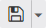

Über die folgenden Verwaltungsbuttons kann das CalcSheet gespeichert und geladen werden.
Buttons "Ex- und Import"
Ø Neu
Durch Anwahl dieses Buttons wird das aktuelle CalcSheet geschlossen und mit einem leeren gestartet. Sollten ungespeicherte Änderung vorhanden sein, so wird auf dieses entsprechend hingewiesen.
Ø

SpeichernMit diesem Button kann das CalcSheet gespeichert werden. Über den linken Bereich des Buttons wird ein bestehendes CalcSheet am aktuellen Speicherort gespeichert. Handelt es sich hingegen um ein neues CalcSheet, so kann der Name und der Speicherort in der Ordnerübersicht frei gewählt werden.
Damit man bestehende Sheets ggfs. unter einem anderen Namen wieder speichern steht der "Speichern unter" über den rechten Bereich des Buttons jederzeit zur Verfügung.
Ø Laden
Durch das Laden kann ein bereits gespeichertes CalcSheet wieder geladen werden. Hierfür wird die Ordnerübersicht geöffnet, in welcher das CalcSheet ausgewählt werden kann.
Hinweis
Beim Laden eines CalcSheet findet keine Aktualisierung der Daten statt! Sollte eine Aktualisierung gewünscht sein, so kann dieses über den Button Funktionen aktualisieren ausgelöst werden.